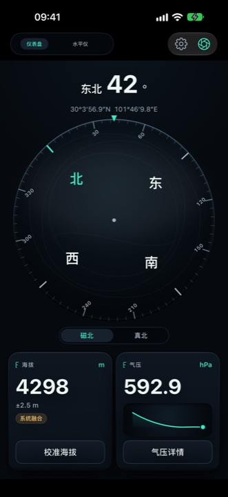
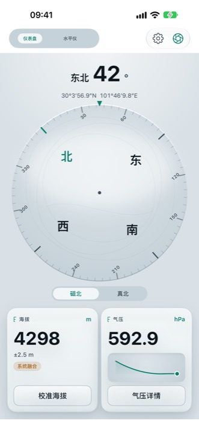
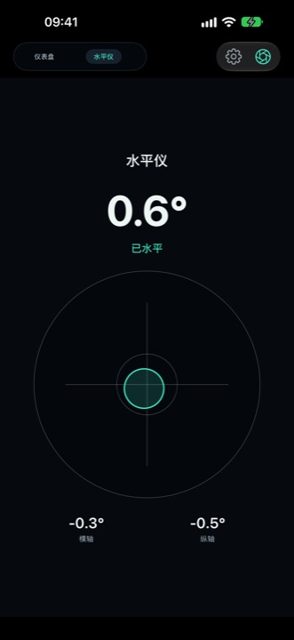
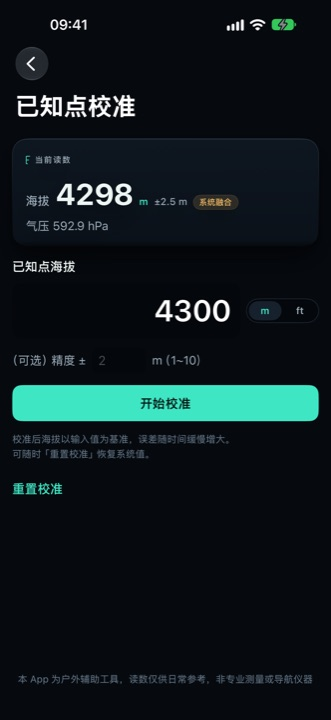
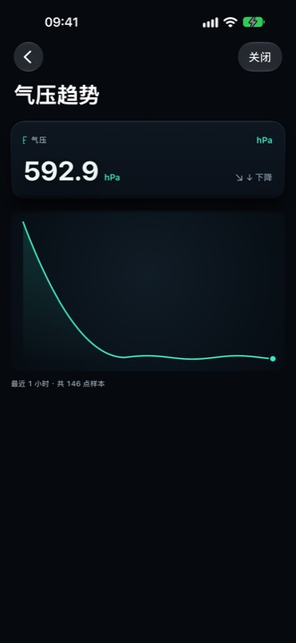

峰行 PeakGo
打开就是一块户外仪表盘
海拔、气压、指南针、水平仪同屏。每个读数都带着误差范围与数据来源，测不准就写「--」，不给你一个假精确的数字。
iPhone，iOS 17 及以上。首版正在 App Store 审核，上线当天这里换成下载徽章。在支持页留下联系方式。
免费下载。无账号、无广告、不收集数据。
四件仪表，一块屏幕
海拔
GPS 与气压双源融合，米 / 英尺切换，支持已知点校准把基准定准。
气压计
实时气压，hPa / inHg / mmHg 切换，趋势曲线一眼看涨跌。
指南针
磁北 / 真北切换、方位角、经纬度，8 字校准引导与磁干扰提示。
水平仪
双轴倾角，露营、架三脚架、挂画时对齐用得上。
界面





水印相机
一键把海拔、坐标、时间、方向、气压叠到照片上，字段自选。旅行与登山的记录，不需要后期再拼。
免费，且不靠广告
上面这些全部永久免费，不订阅也不会失效。
可选订阅「PeakGo 年度支持」：首年免费，之后按 App Store 在你所在地区显示的标价每年续订（中国区 ¥1 / 年）。它换来后续新增的仪表与主题，以及让这个 App 继续没有广告地活下去。
取消方式：iOS 设置 → Apple ID → 订阅。删除 App 不会自动取消。
隐私是默认项
- 所有读数在本机计算，不上传；没有账号、没有云同步。
- 没有广告 SDK，没有第三方统计，不做追踪。
- 定位、相机、运动权限只在本机使用，拒绝任一权限其余功能照常可用。
可用范围与语言
iPhone，iOS 17 及以上。界面九种语言：简体中文、繁體中文、English、日本語、한국어、Deutsch、Français、Español、Italiano。首版不做 iPad 声明——横屏与多窗口布局没有逐屏验证过，就不写进支持范围。